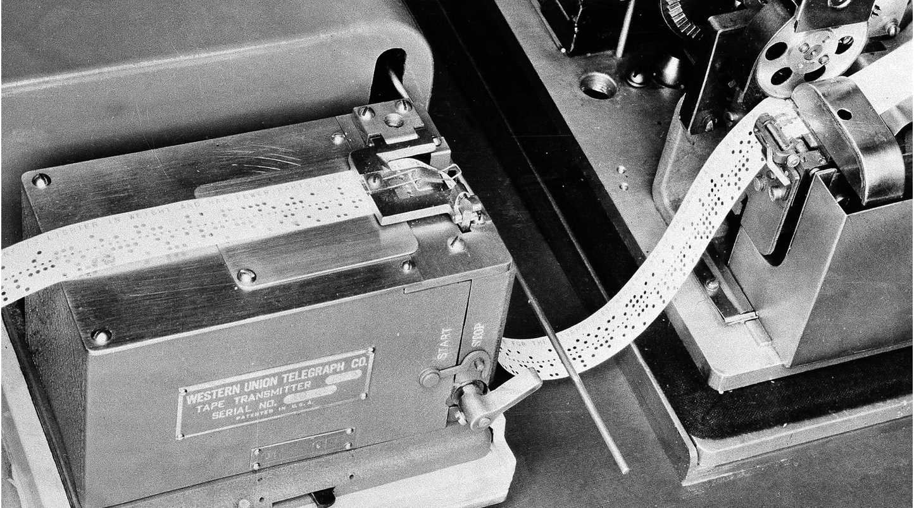
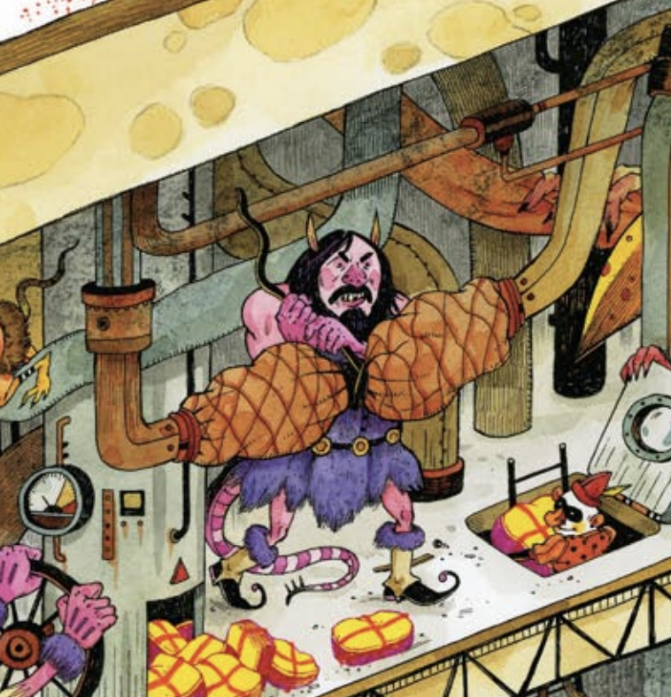

Vannaver Bush, in 1945, proposed the 'Memex' in his paper "As We May Think".
The Memex would be a device that a person could use to store and browse books, records and communications.
Bush could see that while we were documenting things via photography and other mediums, we weren't archiving information in the best way. Bush was also concerend that the developments of science were taking a negative turn. The Memex would be a desk with buttons and controls with massive storage where someone could access the information that they put into the repository. I found it so interesting that Bush conceptualized computers and the internet so similarly to what they actually became. The detail of his thought, understanding hypertext and tagging before it even existed is uncanny.
Some final thoughts.... did Bush's 'Memex' play any role in the invention of the internet and hypertext? Is Bush a time traveler?

"The World Wide Web went live on my physical desktop in Geneva, Switzerland, in December 1990." starts Tim Berners-Lee. It's so strange to think that 6 years before I was born, the World Wide Web was only just created and all it consisted of was one website. Berners-Lee discusses the importance of mantaining proper internet principles in order to protect fundamental rights such as rights to information and basic privacy. Berners-Lee highlights that companies such as Amazon were only able to grow because it had free access to technical standards.
Final thoughts... I think we do take the web for granted in many ways, but I also think we have a right to. We have a right to be able to access whatever information exists, and we also have a right to share it. Control over information is a surefire way to fall into some form of dictatorship.